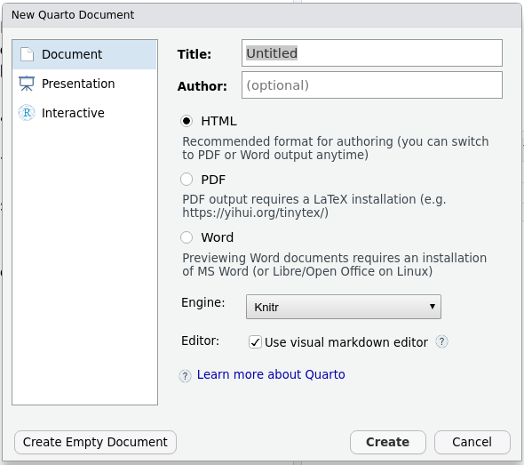
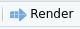

2 Getting started
In this chapter, you will
- create a quarto document
- render it to make an html document
2.1 Creating an quarto file
An quarto file is a plain text file. You can create a new text file, give it the “.qmd” extension, and start typing. But it is better to use RStudio.
On the RStudio menu, go to
Important
If you don’t see the “Quarto Document…” option, check you have quarto installed.
The first time you make a quarto document, you may be asked to install some extra packages. Now you will have a pop-up window asking for the Title, author and output format (Figure 2.1). Make sure the “Use visual markdown editor” option is ticked.
You can fill these in now, or edit the document later. I recommend you start with “HTML” format as is doesn’t require any other software to be installed. When you are ready, click OK, and a new quarto file will open. It will look something like Figure 2.2

You will learn about the elements of this file in Chapter 3.
Exercise
Create an quarto document with output format HTML.
2.2 Rendering the quarto document
You can see the rendered quarto document by knitting it. Click the blue “Render” button which is above the document.

The first time you render the document, you need to save it first.
Exercise
Render your quarto document and examine the output. If it worked then everything is set up correctly.
Exercise
For the rest of this tutorial, we will analyse plant trait data from Svalbard and make a reproducible report.
To download the data and quarto document, you need to run
#install.packages("usethis") # if you don't have it already.
usethis::use_course("biostats-r/svalbardQuartoDemo")Then follow the instructions. This will open the svalbardQuartoDemo Rstudio project.
Open the file svalbard_traits.qmd and render it. The output is a bit of a mess - we are going to make it better!